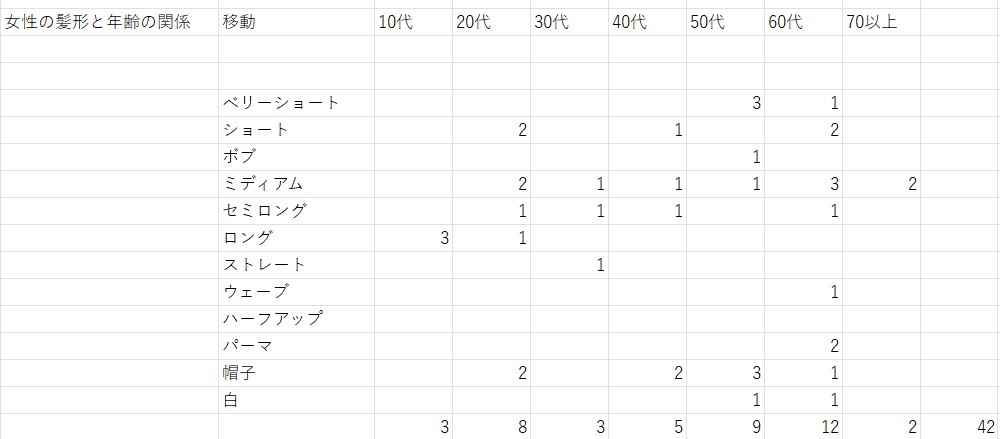
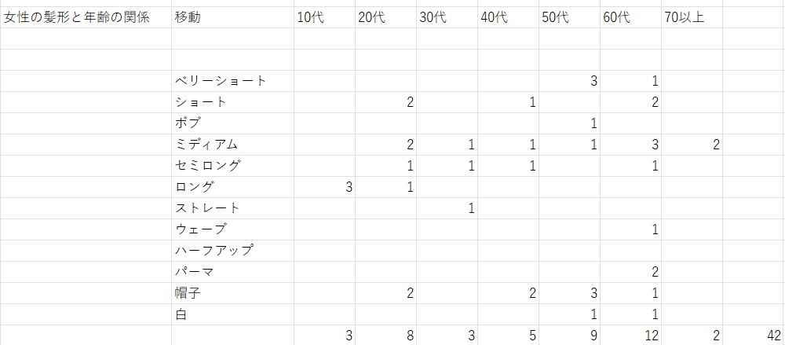
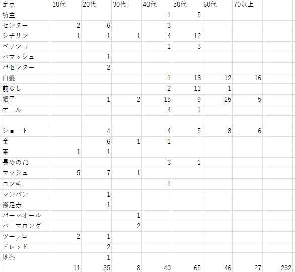

観察の結果とまとめ＜2班＞
髪色と服の系統や年齢の相関関係観察（10月17日）
（観察の詳細）
- 観察場所
定点☞桜木町駅前広場
移動☞桜木町～MMキャンパス
- 方法
定点☞スマートフォンでの撮影、髪型と男性の数をメモを使いながらカウント
移動☞髪を染めている人、男性の数、女性の数をカウント
- 観察時間
定点14時スタート～14時30分終了（30分）
＜調査結果＞
男性の方が染めている人が少ないことに驚き!!!!

※％で考えると、女性と男性では女性の方が約3倍も多くの人が髪を染めていることが分かった
服装と髪型の関係は？
平日のお昼時は長めのセンター分けでスーツを身にまとっている方が多く見受けられる
平日お昼時の桜木町にはお昼休憩の社会人が多いことが分かった
 

考察
データは少ないですが女性は、オールブラックや黒にベージュなどと落ち着いた意味の服装が多い
下のデータの年齢からの相関を見ても50代から60代が多く推移しており高齢になるにつれて落ち着いた色味の服装をしていることがわかりました。
髪の毛に自信がなくなってくるつれ帽子を被る傾向にあると考察しました
結果

感想
- 実際に歩きながら人のかをや髪色服装をしっかりと観察することはないので少し恥ずかしさと面白さがありました
- 今回の観察では人と何度も目があい少し気まずさと申訳のなさがありましたが様々な相関関係が分かりとても満足できる結果になりました
- 目が何度か会うことで人は意外にも周りを注視しながら歩き、特に日本人は人の目を気にする、人に合わせたがるというよく上る話題にも直結する結果にもなったのかなと考えました。日本人と断定するのはただの偏見に過ぎませんが、自分たちが目的にしていない、意図しない結果が生まれることでフィールドワークの大切さ実際に目で見て観察することの意味を理解しました。
ryuugoのサイト